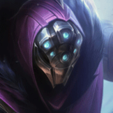

起手組件
 紅水晶
紅水晶近戰要進場，先補生命提高第一輪容錯。

校正至 7.3f · 2026-11-13。Tier與配置是本站的模式策略判斷，不是官方勝率排名。
本站獨立邏輯複核：以既有手機版技能／裝備／符文資料與已整理的7.3f官方差異推演；本輪不採用外站評級、勝率或推薦配置。
單線五人戰重視消耗、清兵、開戰或保排；側線壓力與野區入侵優勢不直接計分，回血也不能假設抵銷全部消耗。
暮夜與黎明 → 殞落王者之劍：前者提供施法與普攻交替的輸出，後者補普攻處理前排與續戰。以這條路線的輸出距離打團，死亡回補時再決定後續防護；沒有回城購物可補救每次換血。
征服者：以獨立技能與普攻累積長戰收益；短打一輪就撤退時通常無法吃滿。其餘選用兇蠻、背水一戰、傳奇：敏捷、骨甲，依本頁輸出方式與生存需求配套。
閃現＋雪球戰車。雪球提供接近機會，命中後仍要確認隊友距離，不必每球都進。標準ARAM不套用打野重擊收益。
2 技 > 1 技 > 3 技。ARAM 開局三個基礎技能各點 1 級，之後主升 2 技、次升 1 技；大絕能點就點。
本站獨立邏輯複核：以既有手機版技能／裝備／符文資料與已整理的7.3f官方差異推演；本輪不採用外站評級、勝率或推薦配置。 完成策略與配置一致性複核，不等於全部技能逐級數值、傷害計算及所有特殊互動已實測；既有缺證項目仍保留。 標準ARAM倍率沿用既有記錄；賽勒斯倍率仍未確認。
起手組件 → 一階鞋或首件核心（依壓力調整）→ 核心成裝 → 鞋子升級 → 情境後續裝。五件成裝加一雙鞋；鞋子兩張圖表示升級前後，不是同時購買兩雙。
近戰要進場，先補生命提高第一輪容錯。

技能接普攻能重複觸發咒刃，生命、攻速與技能加速都很契合。

賈克斯：以普攻與命中特效處理高生命目標並補續航；沒有安全普攻窗口時不能靠單件裝硬打。

賈克斯：降低物理爆發的立即壓力並獎勵參與擊殺；7.3a價格提高，不能忽略先做便宜防禦組件的時機。

被五人集火時提供大型護盾，是團戰版賈克斯的重要容錯。

後期進場失誤仍能再打一輪。

對普攻與物理陣容最實用。

賈克斯：鍍板鋼蓋升級，針對普攻及物理傷害；不把物理護盾當作魔法傷害防護。

保留最可靠的進退與關鍵技能銜接；雪球戰車進場後仍可用閃現修正位置。

雪球命中後可等待隊友跟上再進場，讓近戰英雄在單線拉扯中擁有穩定的接戰與追擊角度。

征服者：以獨立技能與普攻累積長戰收益；短打一輪就撤退時通常無法吃滿。

普攻對敵方英雄造成額外適性傷害。

自身生命低於 60% 時，對敵方英雄的普攻造成額外 5%–11% 傷害。

增加 3% 攻速。

受到敵方英雄傷害時，在接下來 1.5 秒內，使該英雄接下來 3 次技能或普攻傷害減少 30–60（隨等級）。
2 技 > 1 技 > 3 技
ARAM 開局三個基礎技能各點 1 級，之後主升 2 技、次升 1 技；大絕能點就點。
先用兵線或前排疊被動，不要空著攻速直接跳五人。3 技主要拿來躲射手輸出與反暈。
兩件套後開始能正面打前排。找敵方主要普攻核心，1 技跳入後開 3 技逼位移，2 技重置普攻打第三下。
沒有分推環境就把自己當反開戰士。敵方先手進來時反而最好打；主動開戰時要確保閃現、3 技或守護天使至少留一層保命。

需要更純物理咒刃與移速
賈克斯：技能後穿插普攻觸發魔法彎刀，提供技能普攻循環；不與另一件魔法彎刀成裝無理由重疊。
敵方法傷很多
替換死亡之舞，提高魔抗、攻速與混傷。
敵方暴擊射手多
替換守護天使，專門壓低暴擊壓力。
標準 ARAM 最後可追溯倍率：Riot 2.2c 標準 ARAM 將賈克斯傷害加成由 5% 提高至 15%，即 115% 傷害輸出；本站未找到後續標準 ARAM 回調，維持 115%／100%。7.1b 另強化成長物防、被動攻速與反擊風暴最大生命傷害。 本輪核對至7.3e，未以符文大亂鬥倍率覆蓋；官方未提供本英雄完整新版倍率總表，若遊戲內不同以當局模式增益為準。
143位英雄的打法與路線條件複核；既有單卡分級與相容表保留其原有版本，不宣稱全部英雄×全部卡片重新實測或重評。
賈克斯靠被動攻速、二技能重置普攻與反擊風暴長時間纏鬥；普攻與身法最核心，技能、迷霧與控場類能強化跳臉後的輸出與反打。
反普攻與持續強化輸出適合邊線長戰；被技能消耗或被迫短戰時，不易打出完整循環。 增幅先補本套缺少的進場、生存或輸出條件，再看上限；未取得卡面要求的觸發方式就不為它換掉核心。
7.3f：祕術拳擊每次普攻減冷卻提高到0.8秒；連鎖反應冷卻延長到25秒。隱霧反擊、流轉碎礫、移山者削弱；選擇時先看自身能否觸發，不把增幅改動套到標準ARAM。
核心
被動攻速與二技能重置普攻讓賈克斯能高頻觸發命中特效。
核心
一技能跳躍是穩定位移，能直接啟動身法類增幅並黏住後排。
高適配
二技能重置普攻、三技能反擊與大絕坦度都依賴技能循環。
高適配
跳斬後的穿透、防禦與追加傷害能直接放大進場收益。
適配
三技能暈眩是主要反打手段，控制型增幅命中後價值很高。
適配
普攻縮技能、技能普攻循環與保命類單卡都很適合長時間纏鬥。
普攻／身法增幅多
暮夜與黎明、殞落維持高頻普攻，再用死亡之舞、史特拉克與守護天使提高進場容錯。 本路線已同步7.3c的一般裝備；增幅專屬替換另依抽卡決定。
技能接普攻能重複觸發咒刃，生命、攻速與技能加速都很契合。
賈克斯：以普攻與命中特效處理高生命目標並補續航；沒有安全普攻窗口時不能靠單件裝硬打。
賈克斯：降低物理爆發的立即壓力並獎勵參與擊殺；7.3a價格提高，不能忽略先做便宜防禦組件的時機。
被五人集火時提供大型護盾，是團戰版賈克斯的重要容錯。
後期進場失誤仍能再打一輪。
對普攻與物理陣容最實用。
賈克斯：鍍板鋼蓋升級，針對普攻及物理傷害；不把物理護盾當作魔法傷害防護。
需要更久站場
加入智慧末刃，提高攻速與抗魔後持續黏住後排。
技能接普攻能重複觸發咒刃，生命、攻速與技能加速都很契合。
賈克斯：以普攻與命中特效處理高生命目標並補續航；沒有安全普攻窗口時不能靠單件裝硬打。
敵方法傷很多
替換死亡之舞，提高魔抗、攻速與混傷。
賈克斯：降低物理爆發的立即壓力並獎勵參與擊殺；7.3a價格提高，不能忽略先做便宜防禦組件的時機。
後期進場失誤仍能再打一輪。
對普攻與物理陣容最實用。
賈克斯：鍍板鋼蓋升級，針對普攻及物理傷害；不把物理護盾當作魔法傷害防護。
分類與單卡評級是本站條件式建議。新卡完整效果未核實時不補造數值；當局抽到的卡片會改變優先順序。
本站獨立邏輯複核：以既有手機版技能／裝備／符文資料與已整理的7.3f官方差異推演；本輪不採用外站評級、勝率或推薦配置。 完成策略與配置一致性複核，不等於全部技能逐級數值、傷害計算及所有特殊互動已實測；既有缺證項目仍保留。